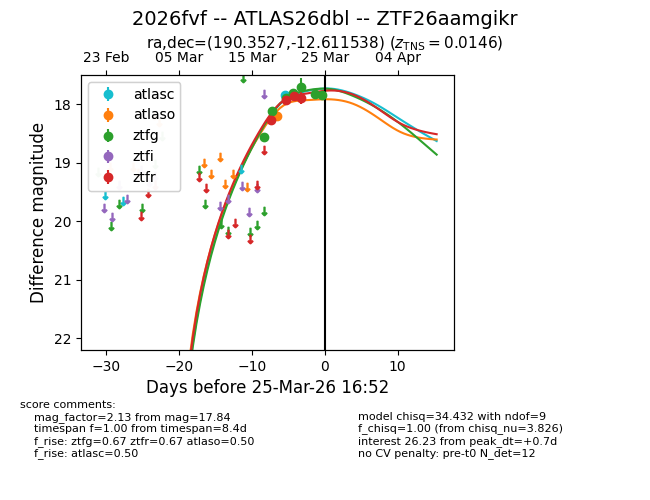
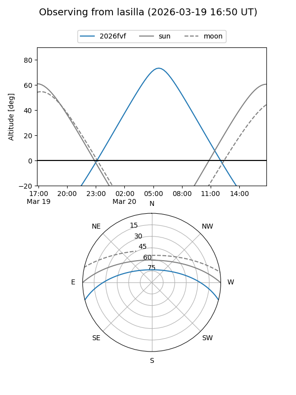
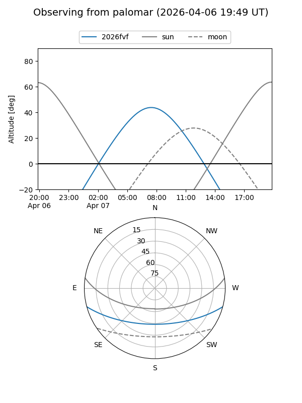
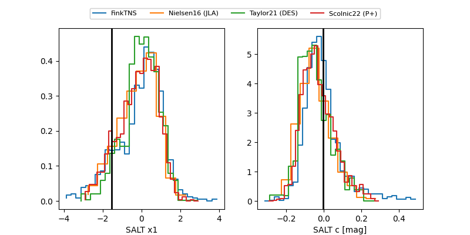

2026fvf
Target 2026fvf at 2026-03-25 16:54
Aliases and brokers:
FINK: link
Lasair: link
ALeRCE: link
TNS: link
YSE: link
alt names
ZTF26aamgikr (ztf,fink_ztf)
2026fvf (tns,yse)
ATLAS26dbl (atlas)
Coordinates:
equatorial (ra, dec) = 190.3527,-12.61154
equatorial (HMS+DMS) = 12:41:24.64,-12:36:41.54
galactic (l, b) = (299.1097,+50.18578)
Flags:
Photometry:
last atlasc=17.84, atlaso=18.20, ztfg=17.84, ztfr=17.89
1 atlasc, 1 atlaso, 7 ztfg, 4 ztfr detections
Lightcurve

Visibility


Additional plots
